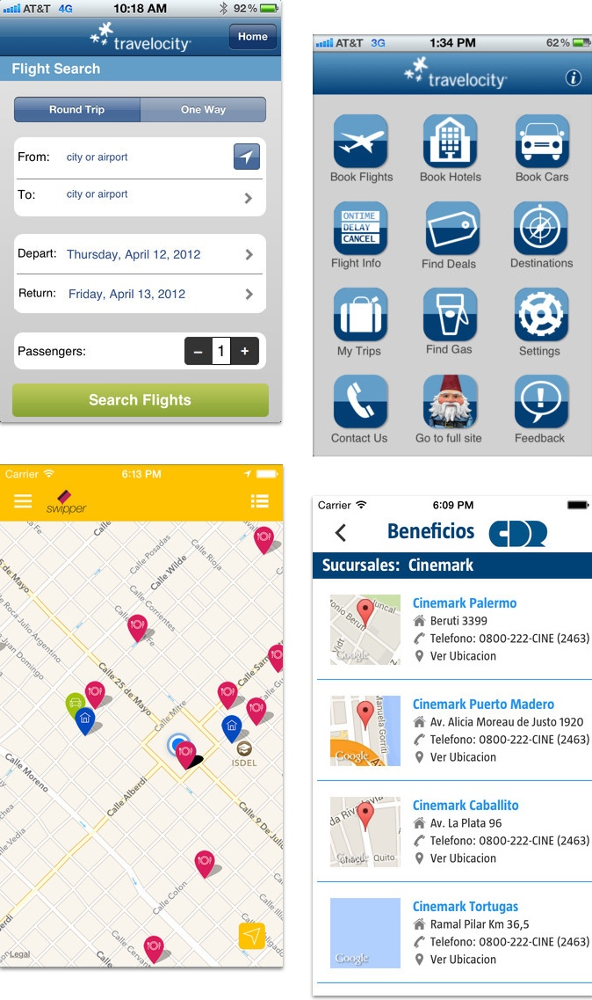
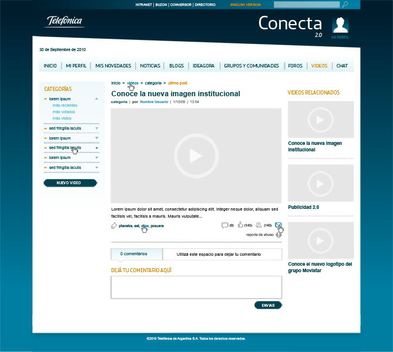

Some examples of UI work
Disclaimer: During my career I designed for multiple platforms, technologies and complexities, worked with different types of teams in different type of roles. Since 2003 to today some of my work could looking a bit dated or maybe it does not exist anymore, that's due to the fast pace of technology. It was a long journey and I learned a lot in every step.
2008 (10 years ago)
Historic context: Obama was winning his election and I was...coding and designing websites, landing pages and apps for Globant. Facebook was still not very popular worldwide and practically non-existent in latin america. The iphone was just launched a year ago and we have only two devices to share in a company of 1000+ employees. UX was not a thing, flat design was not a thing, skeuomorphism was the the trend and we were (wrongly) using the only tools available like Tortoise git, Photoshop and html+css+js to collaborate between designers and developers.
It's hard to rescue something decent ten years ago, loads of NDA work or simply just lost in time and some hard drive. Here's some examples from some internal tools for Globant, work for Travelocity and CDR and a social network I designed an coded for Telefonica
 